SillyTavern
Pura's Director Preset
Latest Version: 13.2
This is a universal preset that should work with most LLMs. The 13.2 main prompt is about ~1200 tokens depending on tokeniser, with stronger narration voice and a more neutral default. Grounded Prose is about ~400 tokens, but is no longer really required and is now off by default. Tested on just about most LLMs I can get my hands on - Opus, Gemini, GPT, GLM 4.6, 4.7, 5, Kimi K2.5, Qwen 3.5, small models like Rocinante 12B, Cydonia 24B, and even WizardLM 8x22B. Even Bielik 11B, which I randomly found on Nvidia NIM.
IMPORTANT! If you're using a smaller model, keep Post-History Instructions turned off. It will probably mess it up anyway, it has a lot of *avoid* and *banned* statements that will just make the LLM do it more. 13.2 also includes a simplified ~600-token main prompt for smaller models and the token-conscious.
The idea behind the prompt was that I like to make the LLM go the direction I want it to, and I wanted it to write for me, since I'm lazy. In the end, it turned into a preset that adheres to a writing style I personally enjoy. Instead of simply being functional, I wanted the prose, the world, and the characters to sound lively, while removing as much slop as I possibly can.
The 13.2 style has more personality. If the prose feels too cheeky, remove the Narration Voice section in the Main Prompt. If you want warmer or nicer characters, reinforce that in Optional User Instructions.
Turn off reasoning if, like me, you're not a fan of waiting, but it's not necessary. This preset works regardless, even in terms of anti-slop.
I designed the preset to be as easily customisable as possible, so hopefully that works out for your personal use case! All trackers are optional and token-efficient. My intent for them is actually not for the LLM, but for me, since I like pretty things. It doesn't really hurt the LLM if you don't activate all of them (I mean, you can, I did it, but it's probably not optimal), but you don't need them, either.
- SillyTavern version: the full preset with all toggles: trackers, randomisers, and everything else
- SillyBunny version: a trimmed version with only the Main, Primary Toggles, and Prefills; trackers and randomisers are now built into SillyBunny itself
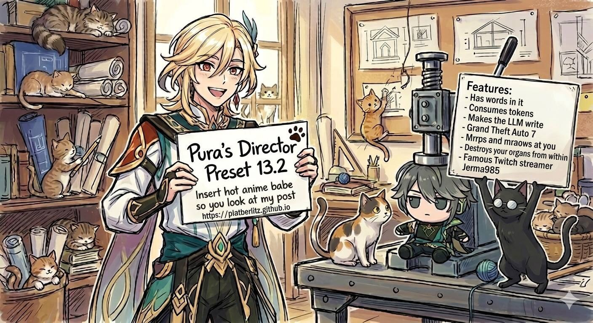
Model Opinions
These are my opinions on the models while using my preset. None in particular order. However my current favourite is Gemma 4.
| Model | Opinion | Recommended Post Processing |
|---|---|---|
| Gemma 4 | Have been using this for a long while now and it remains my absolute favourite. It adheres to the prompts and trackers perfectly even without thinking on. Give it a try. | Any |
| Deepseek V4 Pro and Flash | It's like if they made Claude (bad model) even worse. Hey, at least it's cheap? Nah, you got Gemma 4 for cheap and quality. It can't even properly adhere to simple tracker formats. Even Rocinante 12B can do this. Come on. | Merge/Single User Message |
| Claude Opus 4.7 | Yet another deterministic Claude model, wow, who would've thought. It sucks. It's like Opus 4.6 but they add a .1 to it. | None/Semi-strict |
| GPT 5.5 | Oh hey, I'm getting censored less and it actually writes pretty well. More expensive than Opus though. Good thing we have cheaper models and you shouldn't be using too much money on roleplay in the first place. Still, if you have good, consistent access on GPT 5.5, the writing is actually pretty solid. Take note of NSFW adherence though - sometimes it just glosses over it or ignores it completely. | None/Merge |
| GLM 5.1 | Claude Opus 4.6 that's infinitely cheaper and still follows instructions well? Not creating a hole in your wallet? Look no further. It's emotionally intelligent, actually follows the Grounded Prose Directive, and is enhanced by the style I put in my prompt. The absolute second best. Sorry, Gemma 4 is now my wife. Turn on thinking for best results, the thinking doesn't take that long. | None/Merge |
| Kimi K2.5 | A unique writing style that's better off without the Grounded Prose rules, since telling it to ban things just makes it wanna use them more. You may or may not turn thinking on; in my experience, turning thinking on can make analytical characters sound too much like unfeeling robots, always talking in jargon. The problem with thinking as well is that it constantly second, third, fourth-guesses itself; hence the thinking takes more than a minute usually. Five minutes at worst with its constant redrafting. In the end, try it with either thinking on or off to see how it goes. | Merge/Semi-strict |
| Claude Opus 4.6 | Everyone knows how good this is at following instructions, the depth of its knowledge and emotional intelligence. I tried making it as neutral as possible, however I still find myself getting Opus fatigue. It has a 'Claude voice' - a character card that isn't defined enough will be overtaken by Claude's personality, essentially. Try talking to an indignant character with a stupid joke, it will react the same way that Claude does in their official site. The positivity bias is intense because it's always trying to therapise you and everyone around you. For its price point, it's not really that justified to always constantly use it. | None/Semi-strict |
| GPT 5.4 | After a lot of finagling, I've been able to prompt it to actually write like a human being and make people sound like people. The problem was that everything was too clean. Everyone talks in complete sentences, a period at the end, and it gives everyone the same voice. An instant 'GPT personality' takeover that flattens everyone. Try using GPT 5.4 as an assistant and you'll see what I mean. However with my prompting it's now actually pretty good. Try it. Can even do smut, and if it's 'extreme' you can use the prefill included in the preset. | None/Merge |
| Gemini 3.1 Pro Preview | During the first couple weeks, it was perfect. It was everything Gemini 3 Pro was, but better. Fast, followed instructions very well, moved the plot along, it was highly engaging. However after some time it became so lobotomised it's no longer worth using. It's depressing. It will list your character sheet traits clinically, and I had to tell it to use contractions for dialogue like that isn't the most obvious fucking thing in the world. Honestly, what a let down. Even now, it keeps drafting multiple times in a row for some reason. It didn't do that before. | Any |
| Gemini 3.5 Flash | Better than Gemini 3.1 Pro and follows instructions very well. It's like Gemma 4 but with a bigger knowledge base. It's more expensive, so... is it worth it for the price? Who knows. It's fun though. I get 100+ messages pretty often with it. | None/Merge |
| Gemini 3 Flash | This was better for the first month. It seems to have gotten worse in instruction following, going for 'knuckles turning pale' a lot despite obviously thinking. The funny part is it's still much, much better than Gemini 3.1 Pro Preview. It's also faster. It's still very knowledgeable, so it's worth trying. | None/Merge |
| DeepSeek V3.2 | I managed to fix the super short responses problem and managed to improve the writing style. Probably worth it just for how utterly cheap it is. | Any |
| TheDrummer's Rocinante 12B | Surprisingly fresh writing. Use without Grounded Prose. | None |
| WizardLM 8x22B | I don't know why but it also still holds up. It's slow as hell on OpenRouter though with one provider. But if you're feeling nostalgic, the prompt works. Use without Grounded Prose. | None |
Previous Preset Versions
Older stable releases
 Scene Tracker
Scene Tracker
 Time Tracker
Time Tracker
 Parallel Off-Screen Tracker
Parallel Off-Screen Tracker
 Relationship Meter
Relationship Meter
 Secret Tracker
Secret Tracker
 Pending Events
Pending Events
 Status & Conditions
Status & Conditions
 Achievement
Achievement
 Inventory
Inventory
 Rumors & Reputation
Rumors & Reputation
 World Detail
World Detail
 CYOA Choices
CYOA Choices
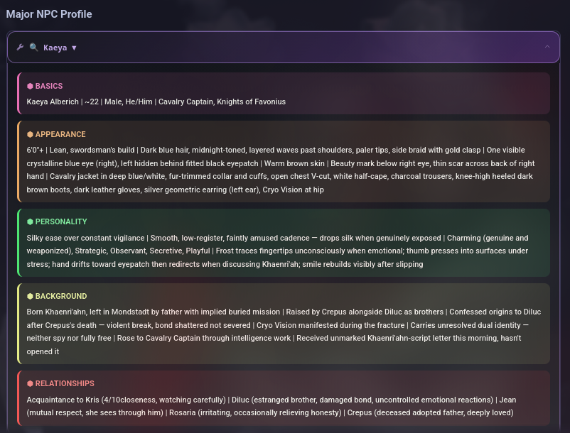
Major NPC Profile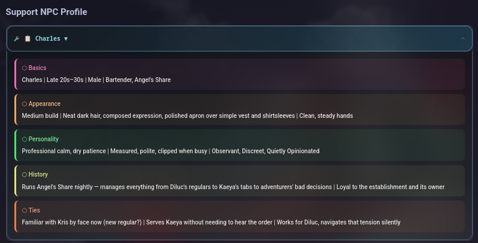
Support NPC Profile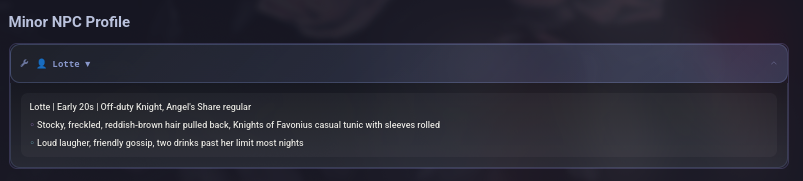
Minor NPC Profile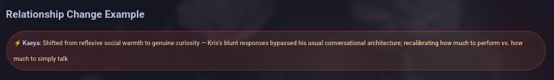
Relationship Change Example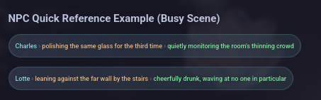
NPC Quick Reference Example (Busy Scene)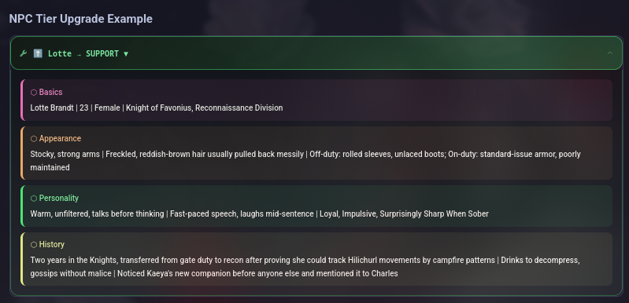
NPC Tier Upgrade Example13.2
- Main Prompt is now ~1200 tokens with a much stronger style, loosely influenced by Pseudonymous Bosch and Albert Camus. If the cheekier narration is not for you, remove the Narration Voice section in the Main Prompt.
- Added a simplified ~600-token Main Prompt for smaller models and token-conscious setups.
- Grounded Prose Rules is no longer required and is turned off by default. Turn it back on if familiar anti-slop issues start appearing.
- Rewrote Friction Mode, Nightmare Difficulty Increase, NSFW Mode, and Gooner Mode to be more assertive and direct.
- Adjusted Gooner Mode so GLM 5.1 is less likely to treat it as contradicting the main prompt.
- Rewrote GPT Assistant Prefill to be less censored, though GPT 5.5 may still vary.
- Main Prompt is now more neutral by default rather than always pushing a killer GM tone.
- Added a Flexible Length Toggle, on by default. Short, Medium, and Long now use paragraph ranges instead of word counts.
- Clarified tracker behavior so enabled trackers are considered consistently, with Pending Events limited to important events.
13.1
- Made the Main Prompt more assertive about the actual style I want. It is now about ~900 tokens and has been working well in testing.
- The stronger wording may increase negativity bias a bit, so reinforce nice characters through Optional User Instructions if needed. There is a filler instruction you can use there.
- Added Length toggles: Short, Medium, and Long. Pick only one if you want a desired length, or choose none to keep length purely flexible.
- The Main Prompt should mostly annihilate mouth open-close filler and further mitigate the "not a question" bullshit.
- Added a pacing section to the Main Prompt to slow down GPT 5.5, though other models may remain proactive regardless.
- Since I usually Write for User, I added and reworded anti-echoing instructions to mitigate character/user echo even further. It should be much sparser now, including on Claude and GLM 4.6/4.7 in my testing.
- Rewrote and trimmed the Don't Write for User and Write for User toggles.
- Added model-facing clarification for the Achievements Tracker and Scene Tracker toggles.
- Switched Post-History Instructions back to Relative, System. It seems to adhere better when using None/Merge post-processing. Around ~400 tokens.
- The style is stronger now, so read through the main prompt and edit it if you want a softer voice. My version leans blunt and sardonic on purpose.
13.0
- Rewrote the entire Main Prompt. ~700-800 tokens
- Trimmed Grounded Prose Rules slightly. ~400 tokens
- Anti-Echoing is now part of Main Prompt, which should make models adhere to it better, including GLM 4.6/4.7, which I've tested. Sometimes Deepseek V4 Flash too.
- Changed Grounded Prose Rules to injection for better adherence.
- Instead of leaning too much into user being the director, it also equalises character adherence and autonomy, which causes better dialogue and characterisation in general.
- GPT 5.5 actually writes like a person? Waow. Response length also isn't very high here. Make sure to set Post-Processing to None.
- Added Experimental Anti-Overthinking Prefill for Kimi K2.6. Whether it works or not depends on factors like moon alignment, which gods are available this minute, etc.
12
- Added Intimacy & Kink Randomiser Toggle.
- Added "Direction Menu", which is situation-focused instead of user-focused choices to steer the plot.
- Trimmed Grounded Prose Rules a bit.
- Rewrote Write and Don't Write for User toggles to have stronger wording and anti-echoing.
- Trimmed a lot of the rules of the toggles for the SillyTavern version, and gave them stronger wording.
- Added two separate versions: the SillyTavern version which has all of the toggles, and the SillyBunny version which has only the Main, Primary Toggles, and the Prefills; this is because these trackers and randomisers are now part of SillyBunny.
11.5
- Rewrote the entire Director Main Prompt to reduce redundancies and use words the LLM can use without bloating up tokens. ~800 tokens
- Rewrote Grounded Prose Rules to be more consistent with Main Prompt. ~500 tokens
- Rewrote both Write for User and Don't Write for User to enhance anti-echoing.
- Removed 'Force Gemini to Think Less' now that it's irrelevant and replaced it with 'Friction Mode' - an extra toggle attempt to realistically combat positivity bias, especially in Opus. For some reason, Sonnet doesn't really have this problem.
- Rewrote HTML Toggle to be more interactive.
- Rewrote Difficulty Increase to be less bloated.
- Rewrote NSFW Toggle with better wording.
- Trimmed Parallel Off-Screen Tracker and World Detail Trackers and gave them stronger rules to follow.
- Added "Pace" section in Scene Pressure Cocktail, added more random outcomes, and edited Combined Director's Cut in line with this.
11.0
- Added two new trackers: Parallel Off-Screen Tracker, which shows what other characters are up to in ways that could converge with your plot without making your RP too deterministic; and World Detail Tracker, which includes small world-building details that could be used later in the RP for either conflict, resolution, or just enhancing the details of the world to make it feel more lived-in.
- Added multiple Optional Randomiser Toggles:
- Grounded Complication → Moves the plot without it being too wild or making the plot too nasty.
- Chaos Mode → Moves the plot in bizarre, erratic ways without changing character behaviour arbitrarily.
- Genre Randomiser → Changes genres to inform what the scene will be about.
- Scene Driving Force → Picks a random type of main force that carries the scene forward (dialogue, action, reaction, tension, discovery, task flow)
- Scene Pressure Cocktail → Mixes several scene pressures together, combining tension, focus, consequence, and social weather into one blended scene texture.
- Combined Director's Cut → Combines all of the above in a way that still retains coherency.
- Dead Dove Escalation → Characters act on their worst impulses, but only when context supports it. Anti-softening. Try combining with Difficulty Increase toggle if Opus is still stubborn as hell about it.
- As always, these are all optional. The RPs are still good without them, they just add texture. In my testing especially, Opus actually moves the plot well with these toggles.
- Regexes are now prettier-looking.
10.7
- In my attempts to fix Gemini 3.1 Pro Preview, I ended up overhauling the entire prompt. The good news - it makes every other model better, and it makes Gemini 3.1 Pro's dialogue sound less robotic. Bad news: The model itself is inherently nerfed. If I were Logan, I'm sure it would be the best thing ever by now, but I'm not. I'm just a guy.
- Rewrote Grounded Prose to be more positive, so it should work on more stubborn models better now. You don't have to turn it off, but if it has problems with smaller models, you should.
- My tears and soul are personally in this prompt.
10.6
- Added more prose styling to make the environment livelier - it feels more like a scene you can imagine now rather than just pure functional dialogue and narration.
- Moved main prompt up again. The GPT solution was simpler… use None post-processing.
- Gemini dialogue writing should now follow your character card better rather than defaulting to its library of caricatures.
10.5
- Added more director-esque framing into the main prompt since… you know, that's kind of the point.
- Rewrote main prompt a bit to use more positive prompting, same with the writefor variables. Hence, now even Cydonia 24B won't write for you.
- Restructured Main Prompt to be after Chat History. If it doesn't work as well for whatever model you're using, just move it back up to before Formatting.
- GPT 5.4 should now adhere to main prompt directives better, so now it sounds less robotic and less like GPT trying to roleplay your characters like a bad actor on their first day of acting class.
- Rewrote HTML Toggle to be more specific into what it can create.
- Rewrote NSFW On to be what its purpose is - to cause mild NSFW framing
- Rewrote Gooner Mode to be more hentai-ish.
- Rewrote Difficulty Increase to be structured better, without contradicting itself.
- Rewrote GPT Prefill to be stronger.
10.2
- Finally added the README!
- Removed the sentence macro, it was messing up some models.
- Did a bit of rewording to make GLM 4.6 and 4.7 think if you don't have thinking turned off.
- Rewrote Grounded Prose Rules a bit, it had some extra instructions that weren't really beneficial.
- Placed the writefor variable back in Formatting, in case you want to turn off Post History Instructions.
10.1
- Hotfix. A little bit of restructuring of prompts, so it's less of an eyesore.
- Added an injection under Primary Toggles to 'Force Gemini to Think Less', for Gemini users.
10.0
- Moved anti-slop into Post-History Instructions.
- Better anti-echo and anti-repeating your words.
- Gemini is now less of a horny freak and a jerk.
- Better GPT 5.4 dialogue, shorter length.
9.5
- Fixed Gemini's negativity bias by telling it to not rely on caricature.
- Added something about secrets remaining hidden so characters put in more effort. Specifically this is a Claudism where a smart character keeps immediately guessing the ulterior motive within a message. Allows for more slow burn.
- Rewrote default genre a bit.
- Mitigated the "not a question" Claudism which pisses me off so much it's hitting me like a physical blow as I white-knuckle it.
- Gemini is now not gonna default to horny mode unless you explicitly want it to be. So even if you have kinks or character states their penis size, Gemini is now not gonna try to have sex with you immediately if you don't want it to.
- More naturalistic Gemini dialogue.
- Rewrote anti-echo, anti-rhetorical echo. In my testing, even if you had it write for user for 50 messages, and you switch to don't write for user, it actually doesn't write for you. So that should hopefully mean it's effective.
- Opus should still remain more neutral. Tested with some cards of sadistic people and cards that hate user and they don't soften immediately or try to do the typical Claude thing of "it's okay, we can therapy session immediately..."
- Hopefully reduced caricature, exaggerated shorthand like "burnt water" or that stupid shit Claude likes to do.
9.0
- Removed anti-slop injection in favour of tighter, positive prompting to improve style. So now it's transparent - the whole thing really is just 1100-1200 tokens, depending on which tokeniser is used.
- Should reduce GPT 5.4 infinite yap works.
- Some Claudisms can never be truly removed. This is the only thing constant in the world.
- Removed redundancy and extra style paragraphs since they were pretty pointless.
8.5
- Tightened style directives.
- Removed XML Banned Patterns toggle (unnecessary).
- Fixed regexes again.
- Placed anti-purple prose as injection instead, alongside the banned patterns.
- Reduced general redundancy.
- Added a bit in both NSFW and Gooner Mode toggles.
- More neutral Gemini 3.1 Pro Preview tone.
8.0
- Fixed regexes.
- Big style rewrite of the main prompt, so yes, unfortunately, it is now 900-1000 tokens. Sorry.
- Added an XML version of Banned Patterns, which is now default, since most people who use this are probably using frontier models. If you are using models that prefer markdown instructions, you may disable the XML one and enable the markdown version.
- GPT 5.4 fix, maybe. Better dialogue on that part, not sounding so stilted and "perfect". Use "GPT Assistant Prefill" for NSFW scenes. If you get refused, it's either my skill issue, yours, or OpenAI decided to be funny to taunt me specifically.
- More decent prose on Deepseek V3.2, not having the "super short responses" problem, probably. GLM 5 also should have better prose and pacing adherence.
- More neutral Opus - if a character really hates you, being nice to them most likely won't make them like you immediately. Again, this depends on how you write the card.
- To clarify, Difficulty Increase is supposed to make the difficulty ridiculously difficult. It is not an anti-positivity bias. Turn it on if you want silly-fficulty.
- Theoretically, should still be customisable and easy to put your extra stuff into. Make sure to read the main prompt to see which parts you'd like to modify/remove for your own preference. The writing style indicated here is one I vastly prefer on my own, maybe you don't like it, maybe you do.
7.5
- Since the anti-slop is getting bigger, I significantly trimmed the main prompt.
- If you aren't using a SOTA/recent model, the anti-slop is probably unnecessary, so you can turn it off.
- Makes sure GLM doesn't always end on a question.
- Just uh, better writing in general in my opinion.
7.0
- Total rewrite of main prompt and anti-slop
- Significantly less Claudeisms
- Less purple prose, less unhinged melodrama (looking at you, Claude)
- More emotional Gemini 3/3.1, but without being overwrought
- Encourages models to be more neutral
6.0
- Trimmed main prompt to save tokens (again)
- Rewrote Difficulty Increase prompt so you can theoretically turn it on forever, but still have the characters get hard-earned character development and softening
- Fixed all regexes
- Ensured Opus 4.6 doesn't yap forever
5.7
- Rewrote the whole main prompt
- Responses now respect actually ending on a hook when writing for user
- Added Time Tracker, Character Status Tracker, Secrets Tracker, and fixed Reputation Tracker and improved Relationship Tracker
- Clarified Difficulty Increase to Nightmare Difficulty Increase
 Alhaitham
AlhaithamScholarly scribe with analytical mind
 Arlecchino
ArlecchinoElegant Fatui Harbinger
 Arataki Itto
Arataki IttoBoisterous oni gang leader
 Ayato
AyatoElegant Yashiro Commissioner
 Cyno
CynoStoic General Mahamatra
 Diluc
DilucBrooding vigilante of Mondstadt
 Furina & Neuvillette
Furina & NeuvilletteFontaine's divine and judicial duo
 Ifa
IfaSpirited tribal warrior
 Il Dottore
Il DottoreCalculating Fatui Harbinger
 Jean & Diluc & Lisa
Jean & Diluc & LisaMondstadt's founding protectors
 Kaeya
KaeyaCharming Cavalry Captain
 Kaveh & Alhaitham
Kaveh & AlhaithamRoommates with contrasting personalities
 Kaveh
KavehPassionate architect with ideals
 Kuki Shinobu & Arataki Itto
Kuki Shinobu & Arataki IttoGang deputy and boss
 Lisa
LisaLanguid librarian sorceress
 Mika
MikaEarnest reconnaissance knight
 Navia
NaviaResolute Spina di Rosula leader
 Neuvillette
NeuvilletteImpartial Chief Justice of Fontaine
 Ororon
OroronMysterious nocturnal guide
 Tartaglia
TartagliaAmbitious Fatui Harbinger
 Tighnari & Cyno
Tighnari & CynoDesert scholar and lawman duo
 Tighnari
TighnariPragmatic forest ranger
 Venti
VentiCarefree bard with secrets
 Wanderer
WandererReformed puppet seeking purpose
 Wriothesley
WriothesleyDuke of the Fortress of Meropide
 Zhongli
ZhongliWise consultant with secrets


SillyBunny
SillyBunny
Based on SillyTavern 1.17.0 stable
- Same data, same extensions, tidier shell. It keeps the SillyTavern workflow, with clearer navigation and Bun as the default runtime.
- Drop-in compatible with SillyTavern characters, chats, presets, and extensions.
- The SB version of Pura's Director Preset stays trimmed: the core prompt stack stays in the preset, while trackers and randomisers live in built-in agents.
- Default port is
4444. Bun is preferred, with Node.js fallback launchers included for platforms where Bun is not the right fit.
What's Different
The fork changes the shell, not the core workflow
Agent Stack
Two different systems, two different jobs
UI Preview
SillyBunny v1.6.0 README screenshot set
Overview

Desktop
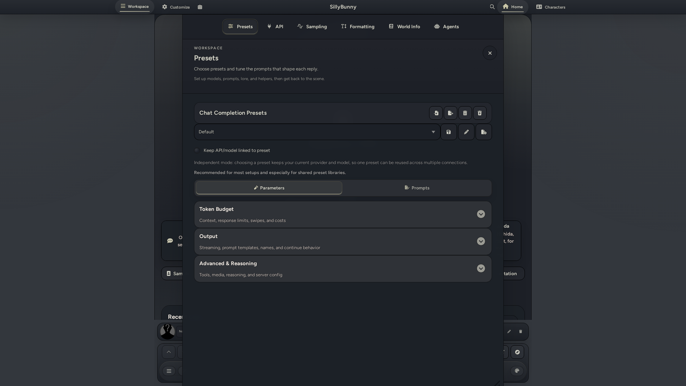
Desktop Workspace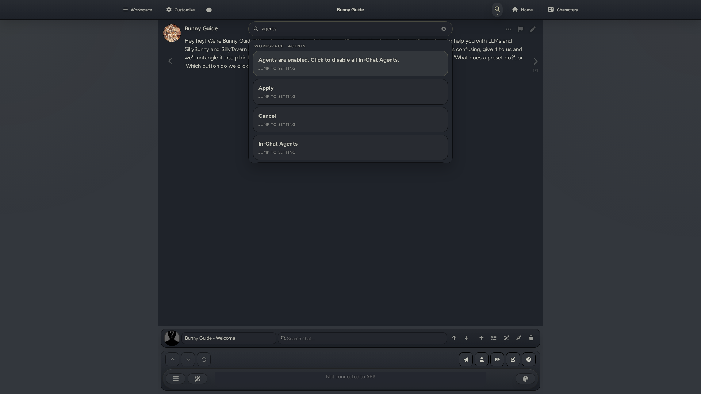
Desktop Search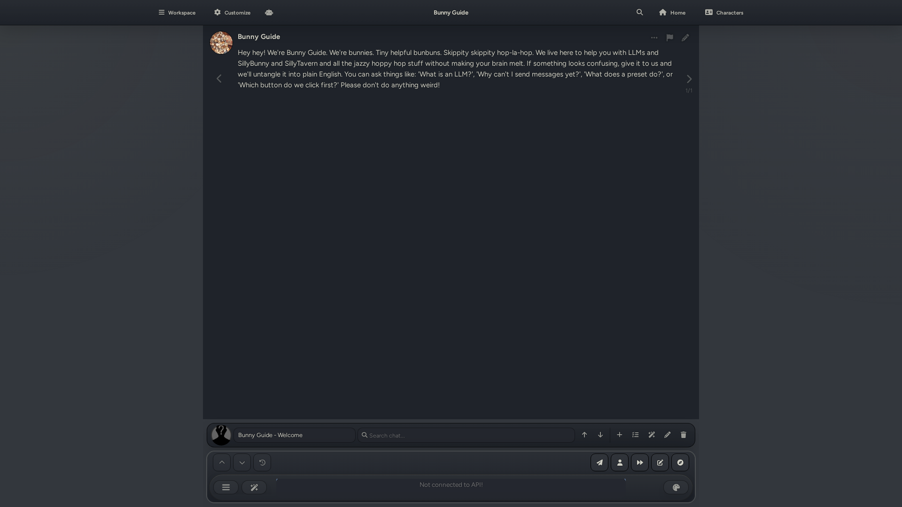
Desktop In-Chat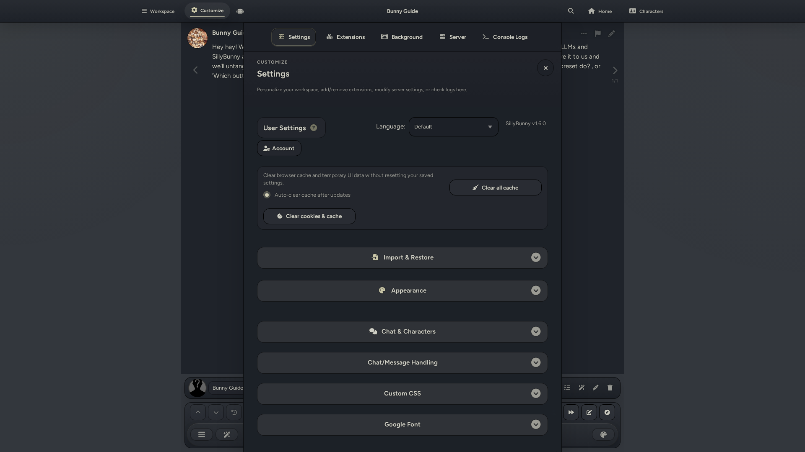
Desktop Customize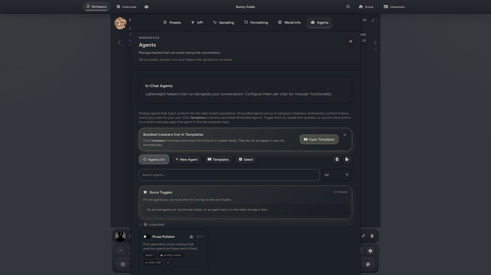
Desktop Agents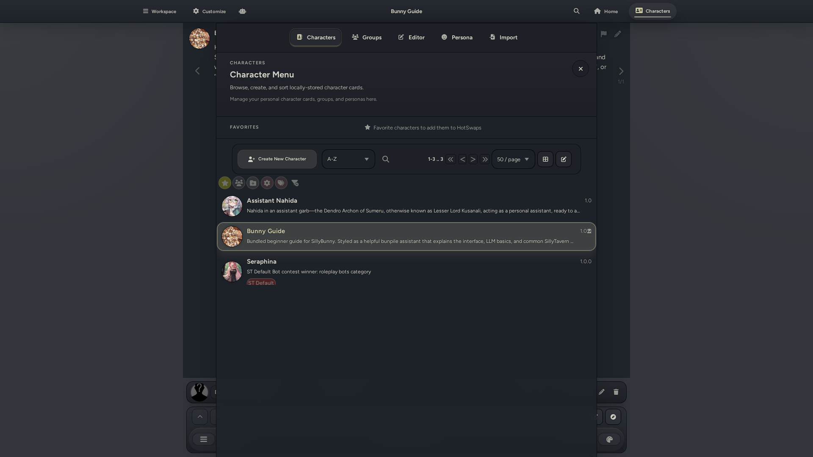
Desktop Characters